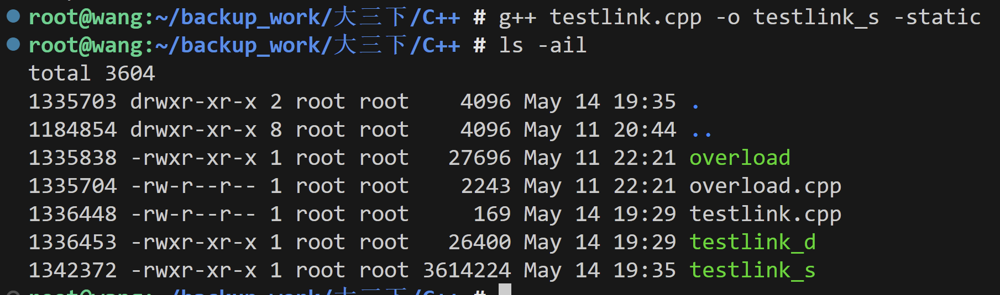

5月14基础知识
a 和 &a 的区别
1. a 的含义
a表示变量本身，直接访问变量的值。- 如果
a是一个普通变量，a表示该变量存储的值。 - 如果
a是一个指针，a表示指针本身的值（即指针存储的地址）。
示例：
int a = 10;
cout << a << endl; // 输出变量 a 的值：10
2. &a 的含义
&a表示变量a的地址。&是取地址运算符，用于获取变量在内存中的地址。- 如果
a是一个变量，&a返回该变量的内存地址。 - 如果
a是一个指针，&a返回指针本身的地址。
示例：
int a = 10;
cout << &a << endl; // 输出变量 a 的地址，例如：0x7ffee4b3c8ac
3. 区别总结
| 表达式 | 含义 | 示例 |
|---|---|---|
a |
变量本身的值 | int a = 10; cout << a; |
&a |
变量的地址（内存中的位置） | int a = 10; cout << &a; |
4. 使用场景
（1）传值和传引用
- 传值：直接传递变量的值。
- 传引用：通过
&传递变量的地址，允许函数修改原始变量。
void modify(int &x) { // 引用传递
x = 20;
}
int main() {
int a = 10;
modify(a); // 传递 a 的引用
cout << a << endl; // 输出 20
return 0;
}
（2）指针操作
- 使用
&获取变量的地址，用于初始化指针。 - 使用指针访问或修改变量的值。
int a = 10;
int *p = &a; // 指针 p 指向变量 a 的地址
cout << *p << endl; // 输出 a 的值：10
5. 注意事项
&既可以表示取地址运算符，也可以表示引用类型的声明（如int &ref = a;）。&a只能用于变量，不能用于字面值或表达式。例如：int a = 10; cout << &a; // 合法 cout << &(a + 1); // 非法，不能对表达式取地址
总结
a表示变量本身的值。&a表示变量的地址（内存位置）。&是取地址运算符，常用于指针操作或引用传递。
static 关键字的作用
在 C++ 中，static 关键字有多种用途，具体作用取决于它的使用场景。以下是 static 的主要作用：
1. 修饰局部变量
- 作用：
- 局部变量的生命周期从程序开始到程序结束（全局生命周期），但作用域仍然是局部的。
-
变量只会初始化一次，后续调用时保留上一次的值。
-
示例：
void func() { static int count = 0; // 静态局部变量 count++; cout << "Count: " << count << endl; } int main() { func(); // 输出：Count: 1 func(); // 输出：Count: 2 func(); // 输出：Count: 3 return 0; }
2. 修饰全局变量或函数
- 作用：
-
将全局变量或函数的作用域限制在当前文件，避免与其他文件中的同名变量或函数冲突（内部链接）。
-
示例：
static int globalVar = 10; // 静态全局变量 static void func() { // 静态函数 cout << "Static function" << endl; }
3. 修饰类的成员变量
- 作用：
- 静态成员变量属于类，而不是某个具体对象。
-
所有对象共享同一个静态成员变量。
-
特点：
- 静态成员变量需要在类外初始化。
-
静态成员变量在程序开始时分配内存，程序结束时释放。
-
示例：
class MyClass { public: static int count; // 静态成员变量 }; int MyClass::count = 0; // 静态成员变量初始化 int main() { MyClass obj1, obj2; MyClass::count = 5; // 所有对象共享 cout << obj1.count << endl; // 输出：5 cout << obj2.count << endl; // 输出：5 return 0; }
4. 修饰类的成员函数
- 作用：
- 静态成员函数属于类，而不是某个具体对象。
-
静态成员函数只能访问静态成员变量，不能访问非静态成员变量。
-
示例：
class MyClass { public: static void display() { // 静态成员函数 cout << "Static function" << endl; } }; int main() { MyClass::display(); // 通过类名调用静态函数 return 0; }
5. 在多文件项目中的作用
- 作用：
-
将变量或函数的作用域限制在当前文件，避免与其他文件中的同名符号冲突。
-
示例：
// file1.cpp static int var = 10; // 仅在 file1.cpp 中可见 // file2.cpp static int var = 20; // 仅在 file2.cpp 中可见
总结
| 使用场景 | 作用 |
|---|---|
| 局部变量 | 生命周期延长到程序结束，值在多次调用间保持。 |
| 全局变量/函数 | 限制作用域为当前文件，避免命名冲突。 |
| 类的静态成员变量 | 属于类而非对象，所有对象共享，需在类外初始化。 |
| 类的静态成员函数 | 属于类而非对象，只能访问静态成员变量。 |
static 是一个功能强大的关键字，广泛用于控制变量的生命周期、作用域以及类的共享成员。
static 的底层原理
static 关键字的底层实现依赖于编译器的处理方式。它通过调整变量的存储位置、作用域和生命周期来实现其功能。以下是 static 的底层原理分析：
1. 静态局部变量
特点：
- 生命周期：从程序开始到程序结束（全局生命周期）。
- 作用域：仅在声明它的函数或代码块中可见（局部作用域）。
- 初始化：只会在第一次执行到该变量时初始化一次，后续调用保留上一次的值。
底层实现：
- 静态局部变量存储在全局/静态存储区（通常是
.data或.bss段）。 - 编译器会在函数外部为静态局部变量分配内存，并在函数中插入代码以确保变量只初始化一次。
示例：
void func() {
static int count = 0; // 静态局部变量
count++;
cout << count << endl;
}
编译器处理后的伪代码：
int count = 0; // 在全局/静态存储区分配内存
bool initialized = false;
void func() {
if (!initialized) {
count = 0; // 初始化
initialized = true;
}
count++;
cout << count << endl;
}
2. 静态全局变量
特点：
- 生命周期：从程序开始到程序结束。
- 作用域：仅在声明它的文件中可见（内部链接）。
底层实现：
- 静态全局变量存储在全局/静态存储区。
- 编译器会将静态全局变量的符号（名称）限制为当前文件的作用域，避免与其他文件中的同名变量冲突。
示例：
static int globalVar = 10; // 静态全局变量
编译器处理：
- 静态全局变量的符号名称会被编译器修改为文件私有的符号，例如 _file1_globalVar。
- 链接器不会将该符号暴露给其他文件。
3. 静态成员变量
特点：
- 属于类，而不是某个具体对象。
- 所有对象共享同一个静态成员变量。
- 静态成员变量在程序开始时分配内存，程序结束时释放。
底层实现：
- 静态成员变量存储在全局/静态存储区。
- 编译器会为静态成员变量分配独立的内存，并在类外部进行初始化。
示例：
class MyClass {
public:
static int count; // 静态成员变量
};
int MyClass::count = 0; // 静态成员变量初始化
编译器处理：
- 静态成员变量的内存分配与普通全局变量类似。
- 编译器会在类外生成一个全局符号，例如 _MyClass_count，用于存储静态成员变量。
4. 静态成员函数
特点：
- 静态成员函数属于类，而不是某个具体对象。
- 静态成员函数不能访问非静态成员变量或成员函数。
底层实现：
- 静态成员函数本质上是一个普通的全局函数，但它的作用域被限制在类中。
- 编译器不会为静态成员函数隐式传递
this指针。
示例：
class MyClass {
public:
static void display() {
cout << "Static function" << endl;
}
};
编译器处理：
- 静态成员函数会被编译为普通的全局函数，例如 _MyClass_display。
- 调用时通过类名限定符访问，例如 MyClass::display()。
5. 多文件中的静态变量和函数
特点：
- 静态变量和函数的作用域限制在声明它的文件中（内部链接）。
- 不会与其他文件中的同名变量或函数冲突。
底层实现：
- 编译器会将静态变量或函数的符号名称修改为文件私有的符号。
- 链接器不会将这些符号暴露给其他文件。
示例：
// file1.cpp
static int var = 10; // 静态全局变量
// file2.cpp
static int var = 20; // 静态全局变量
编译器处理：
- file1.cpp 中的 var 会被编译为 _file1_var。
- file2.cpp 中的 var 会被编译为 _file2_var。
- 两者互不冲突。
6. 存储位置
根据 static 的使用场景，变量会存储在不同的内存区域：
| 使用场景 | 存储位置 |
|----------------------|-----------------------|
| 静态局部变量 | 全局/静态存储区 |
| 静态全局变量 | 全局/静态存储区 |
| 静态成员变量 | 全局/静态存储区 |
| 静态成员函数 | 代码段（text segment）|
7. 优点与限制
优点：
- 提高变量的生命周期和作用域控制。
- 避免命名冲突（静态全局变量和静态函数）。
- 提供类级别的共享数据（静态成员变量）。
限制：
- 静态变量会占用全局内存，可能导致内存占用增加。
- 静态成员函数无法访问非静态成员。
总结
static的底层实现依赖于编译器的处理方式，通过调整变量的存储位置和符号链接属性来实现其功能。- 静态变量和函数通常存储在全局/静态存储区，具有全局生命周期。
- 静态成员函数和变量为类提供了共享数据和行为的能力，是面向对象编程的重要特性之一。
#define 和 const 的区别
#define 和 const 都可以用来定义常量，但它们的实现方式和使用场景有很大不同。以下是它们的主要区别：
1. 定义方式
#define：- 是一个预处理指令，用于定义宏。
- 在编译之前由预处理器直接替换，不占用内存。
-
语法：
#define PI 3.14 -
const： - 是一个关键字，用于定义常量变量。
- 在编译时分配内存，具有类型检查。
- 语法：
const double PI = 3.14;
2. 类型检查
#define：- 没有类型检查，仅仅是简单的文本替换。
- 如果使用错误的类型，可能导致难以发现的错误。
-
示例：
#define VALUE 10 int x = VALUE + "abc"; // 编译器不会报错，但运行时可能出错 -
const： - 有严格的类型检查，能够在编译时发现错误。
- 示例：
const int VALUE = 10; int x = VALUE + "abc"; // 编译器报错：类型不匹配
3. 内存分配
#define：- 不占用内存，预处理阶段直接替换为对应的值。
-
示例：
#define VALUE 10 int x = VALUE; // 编译后等价于 int x = 10; -
const： - 常量变量在内存中分配空间。
- 示例：
const int VALUE = 10; int x = VALUE; // VALUE 是一个常量变量，存储在内存中
4. 调试信息
#define：- 因为是文本替换，调试时无法看到宏的具体值。
-
示例：
#define VALUE 10 cout << VALUE; // 调试时无法直接查看 VALUE 的值 -
const： - 常量变量有具体的内存地址，可以在调试时查看其值。
- 示例：
const int VALUE = 10; cout << VALUE; // 调试时可以查看 VALUE 的值
5. 作用域
#define：- 没有作用域限制，宏在整个文件中有效，可能导致命名冲突。
-
示例：
#define VALUE 10 -
const： - 遵循 C++ 的作用域规则，常量变量的作用域受限于其定义的位置。
- 示例：
const int VALUE = 10; // 仅在当前作用域内有效
6. 可读性和安全性
#define：- 容易引入难以发现的错误，尤其是复杂的宏定义。
-
示例：
#define SQUARE(x) x * x int result = SQUARE(1 + 2); // 实际替换为 1 + 2 * 1 + 2，结果为 5 -
const： - 更安全，支持类型检查，避免了宏替换带来的问题。
- 示例：
const int SQUARE(int x) { return x * x; } int result = SQUARE(1 + 2); // 结果为 9
7. 适用场景
#define：- 用于定义简单的常量或宏，尤其是需要跨文件共享的常量。
-
示例：
#define MAX 100 -
const： - 用于定义类型安全的常量，推荐在 C++ 中优先使用。
- 示例：
const int MAX = 100;
总结
| 特性 | #define |
const |
|---|---|---|
| 定义方式 | 预处理指令，文本替换 | 关键字，定义常量变量 |
| 类型检查 | 无类型检查 | 有严格的类型检查 |
| 内存分配 | 不占用内存 | 占用内存 |
| 调试信息 | 无法调试宏的值 | 可以调试常量的值 |
| 作用域 | 全局有效 | 遵循作用域规则 |
| 安全性 | 容易引入错误 | 更安全，推荐使用 |
在 C++ 中，建议优先使用 const，因为它更安全、可读性更高，并且支持类型检查。
静态链接和动态链接的区别
静态链接和动态链接是程序在编译和运行过程中与库文件关联的两种方式。它们的主要区别在于链接的时间、方式以及程序的运行机制。
1. 静态链接
定义：
- 静态链接是在编译阶段将程序所需的库代码直接嵌入到生成的可执行文件中。
- 链接完成后，可执行文件不再依赖外部库。
特点：
- 链接时间：
- 在编译时完成链接。
- 可执行文件大小：
- 可执行文件包含所有依赖的库代码，因此文件较大。
- 运行时依赖：
- 不需要依赖外部库，程序可以独立运行。
- 性能：
- 程序启动速度较快，因为所有代码已经嵌入到可执行文件中。
- 更新库的影响：
- 如果库文件更新，需要重新编译程序以包含新的库代码。
示例：
g++ main.cpp -o program -static
program 是一个静态链接的可执行文件，包含所有依赖的库代码。
2. 动态链接
定义：
- 动态链接是在运行时将程序所需的库加载到内存中，并与程序关联。
- 可执行文件本身不包含库代码，而是依赖外部动态库（如
.so文件）。
特点：
- 链接时间：
- 在运行时完成链接。
- 可执行文件大小：
- 可执行文件只包含对动态库的引用，因此文件较小。
- 运行时依赖：
- 程序运行时需要依赖外部动态库，如果库文件缺失或版本不匹配，程序可能无法运行。
- 性能：
- 程序启动时需要加载动态库，启动速度可能稍慢。
- 更新库的影响：
- 如果动态库更新，程序无需重新编译即可使用新的库代码。
示例：
g++ main.cpp -o program
program 是一个动态链接的可执行文件，运行时依赖动态库（如 libstdc++.so）。
3. 区别总结
| 特性 | 静态链接 | 动态链接 |
|---|---|---|
| 链接时间 | 编译时完成 | 运行时完成 |
| 可执行文件大小 | 较大（包含库代码） | 较小（只包含库引用） |
| 运行时依赖 | 无需依赖外部库 | 需要依赖外部动态库 |
| 启动速度 | 较快 | 较慢（需要加载动态库） |
| 库更新影响 | 需要重新编译程序 | 无需重新编译，直接使用新库 |
| 内存使用 | 每个程序都有一份库代码，内存占用较高 | 多个程序共享动态库，内存占用较低 |
4. 使用场景
静态链接适用场景：
- 程序需要在没有动态库支持的环境中运行（如嵌入式系统）。
- 程序需要完全独立运行，不依赖外部库。
动态链接适用场景：
- 程序需要频繁更新库代码（如修复漏洞或添加功能）。
- 多个程序需要共享同一个库，减少内存占用和磁盘空间。
5. 示例对比
静态链接示例：
#include <iostream>
using namespace std;
int main() {
cout << "Hello, Static Link!" << endl;
return 0;
}
g++ main.cpp -o static_program -static
static_program 是一个独立的可执行文件，不依赖外部动态库。
动态链接示例：
#include <iostream>
using namespace std;
int main() {
cout << "Hello, Dynamic Link!" << endl;
return 0;
}
g++ main.cpp -o dynamic_program
dynamic_program 在运行时需要依赖动态库（如 libstdc++.so）。
6. 总结
- 静态链接：将库代码嵌入到可执行文件中，生成的程序独立运行，但文件较大。
- 动态链接：在运行时加载库，程序依赖外部动态库，文件较小，更新灵活。
- 在实际开发中，动态链接更常用，但在某些特殊场景（如嵌入式开发）可能需要使用静态链接。 下面是静态链接和动态链接编译的文件大小对比 
变量的声明和定义的区别
在 C++ 中，声明和定义是两个不同的概念，主要区别在于是否为变量分配内存。
1. 声明（Declaration）
- 作用：
- 告诉编译器变量的名称和类型，但不为变量分配内存。
-
声明通常用于让编译器知道变量的存在，以便在其他文件中使用。
-
特点：
- 不分配内存。
-
可以多次声明同一个变量。
-
示例：
extern int a; // 声明变量 a，表示它在其他地方定义
2. 定义（Definition）
- 作用：
- 为变量分配内存，并可以初始化变量。
-
定义是变量的实际实现。
-
特点：
- 分配内存。
-
一个变量只能定义一次。
-
示例：
int a = 10; // 定义变量 a，并初始化为 10
3. 声明和定义的关系
- 声明是告诉编译器变量的存在，而定义是为变量分配内存并初始化（可选）。
- 所有的定义同时也是声明，但声明不一定是定义。
4. 示例对比
声明：
extern int a; // 声明变量 a，表示它在其他地方定义
定义：
int a = 10; // 定义变量 a，并分配内存
完整示例：
// file1.cpp
#include <iostream>
using namespace std;
extern int a; // 声明变量 a
int main() {
cout << a << endl; // 使用变量 a
return 0;
}
// file2.cpp
int a = 10; // 定义变量 a
5. 编译器行为
- 声明：
- 编译器只会记录变量的名称和类型，不会分配内存。
- 定义：
- 编译器会为变量分配内存，并可能初始化变量。
6. 总结
| 特性 | 声明（Declaration） | 定义（Definition） |
|---|---|---|
| 作用 | 告诉编译器变量的存在 | 为变量分配内存并初始化（可选） |
| 内存分配 | 不分配内存 | 分配内存 |
| 次数 | 可以多次声明 | 只能定义一次 |
| 示例 | extern int a; |
int a = 10; |
在实际开发中，声明通常用于多文件项目中，定义则是变量的实际实现。
上面的程序为什么在main函数之外定义的变量a=10能在main函数中使用
这个程序能够在 main 函数中找到并使用 file2.cpp 中定义的变量 a，是因为 C++ 的编译和链接过程 会将多个源文件组合在一起，形成一个完整的可执行文件。以下是详细的解释：
1. 编译和链接的过程
C++ 程序的构建分为两个主要阶段：编译和链接。
编译阶段
- 每个源文件（如
file1.cpp和file2.cpp）会被单独编译成目标文件（.o或.obj文件）。 - 在
file1.cpp中，extern int a;告诉编译器：变量a是在其他文件中定义的，编译器不会为a分配内存，但会记录它的引用。
链接阶段
- 链接器会将所有目标文件（如
file1.o和file2.o）合并成一个可执行文件。 - 在链接阶段，链接器会找到
file2.cpp中定义的变量a，并将file1.cpp中对a的引用解析为file2.cpp中的定义。
2. extern 的作用
extern关键字用于声明一个变量，表示该变量在其他文件中定义。-
在
file1.cpp中：告诉编译器，extern int a;a是一个全局变量，但它的定义在其他文件中。 -
在
file2.cpp中：是变量int a = 10;a的定义，分配了内存并初始化为10。
3. 链接器如何找到变量
- 链接器会扫描所有目标文件，找到
file2.o中定义的变量a，并将file1.o中对a的引用解析为file2.o中的定义。 - 这样，
main函数中的cout << a;就能够正确访问file2.cpp中定义的变量a。
4. 示例运行流程
代码
// file1.cpp
#include <iostream>
using namespace std;
extern int a; // 声明变量 a
int main() {
cout << a << endl; // 使用变量 a
return 0;
}
// file2.cpp
int a = 10; // 定义变量 a
编译命令
g++ file1.cpp file2.cpp -o program
运行结果
10
5. 为什么程序从 main 函数开始？
- 程序的执行确实从
main函数开始。 - 在
main函数中，cout << a;需要访问变量a。 - 由于
a是通过extern声明的，编译器知道它的定义在其他文件中，链接器会在链接阶段将a的引用解析为file2.cpp中的定义。
6. 总结
extern的作用：告诉编译器变量的定义在其他文件中。- 编译和链接过程：
- 编译阶段：每个源文件单独编译成目标文件。
- 链接阶段：链接器将目标文件合并，解析跨文件的变量和函数引用。
- 程序执行：程序从
main函数开始，运行时通过链接器解析的地址访问全局变量a。
因此，虽然变量 a 的定义在 file2.cpp 中，但通过 extern 声明和链接器的工作，main 函数能够正确找到并使用它。
为什么要用extern来声明变量
在 C++ 中通过 extern 声明和跨文件定义变量的方式有以下几个主要用途：
1. 实现多文件协作
- 作用：
- 在大型项目中，代码通常会被拆分为多个文件（模块）以便于管理和维护。
-
使用
extern声明可以在一个文件中引用另一个文件中定义的变量或函数，从而实现模块之间的协作。 -
示例：
- 一个文件中定义全局配置变量，其他文件通过
extern声明访问这些配置。// config.cpp int maxConnections = 100; // 定义全局变量 // main.cpp extern int maxConnections; // 声明全局变量 cout << maxConnections << endl; // 使用变量
2. 避免重复定义
- 作用：
- 在多文件项目中，如果在多个文件中定义同名的全局变量，会导致链接错误（重复定义）。
-
使用
extern声明可以避免重复定义，只需在一个文件中定义变量，其他文件通过声明引用即可。 -
示例：
// file1.cpp int globalVar = 10; // 定义变量 // file2.cpp extern int globalVar; // 声明变量
3. 提高代码的可维护性
- 作用：
- 将变量的定义和使用分离，可以更清晰地组织代码。
-
例如，将全局变量集中定义在一个文件中，便于统一管理和修改。
-
示例：
// globals.cpp int maxUsers = 50; int timeout = 30; // globals.h extern int maxUsers; extern int timeout; // main.cpp #include "globals.h" cout << maxUsers << endl;
4. 支持跨模块共享数据
- 作用：
- 在模块化编程中，某些数据需要在多个模块之间共享。
-
使用
extern声明可以实现跨模块的数据共享，而无需重复定义。 -
示例：
// module1.cpp int sharedData = 42; // 定义共享数据 // module2.cpp extern int sharedData; // 声明共享数据 sharedData += 10; // 修改共享数据
5. 减少内存占用
- 作用：
- 如果在多个文件中定义同名变量，每个文件都会分配一份内存。
- 使用
extern声明可以确保变量只分配一次内存，减少内存占用。
6. 支持全局配置和常量管理
- 作用：
- 在项目中，某些全局配置（如最大连接数、超时时间等）需要被多个模块访问。
-
使用
extern声明可以集中管理这些配置，避免重复定义。 -
示例：
// config.cpp const int MAX_CONNECTIONS = 100; // config.h extern const int MAX_CONNECTIONS; // main.cpp #include "config.h" cout << MAX_CONNECTIONS << endl;
7. 提高代码的可读性
- 作用：
- 使用
extern声明可以让代码更具可读性，因为变量的定义和使用被分离，读者可以更清楚地了解变量的来源。
总结
通过 extern 声明和跨文件定义变量的方式，可以实现以下目标：
1. 模块化编程：支持多文件协作，便于代码拆分和管理。
2. 避免重复定义：确保全局变量只定义一次，避免链接错误。
3. 共享数据：在多个模块之间共享数据。
4. 集中管理：将全局变量集中定义，便于维护和修改。
5. 减少内存占用：确保全局变量只分配一次内存。
这种方式在大型项目中非常常见，尤其是在需要跨模块共享数据或集中管理全局配置时。
#ifdef、#else、#endif 和 #ifndef 的作用
这些是 C/C++ 中的预处理指令，用于条件编译。它们的主要作用是根据条件选择性地编译代码。
1. #ifdef
- 全称：
if defined - 作用：
- 判断某个宏是否已经被定义。
-
如果宏已定义，则编译
#ifdef和对应的#else或#endif之间的代码。 -
示例：
解释：#define DEBUG #ifdef DEBUG cout << "Debug mode is enabled" << endl; #endif - 如果宏
DEBUG已定义，则编译输出Debug mode is enabled。
2. #else
- 作用：
- 与
#ifdef或#ifndef配合使用。 -
如果条件不满足，则编译
#else后的代码。 -
示例：
解释：#define DEBUG #ifdef DEBUG cout << "Debug mode is enabled" << endl; #else cout << "Debug mode is disabled" << endl; #endif - 如果
DEBUG已定义，编译输出Debug mode is enabled。 - 如果
DEBUG未定义，编译输出Debug mode is disabled。
3. #endif
- 作用：
- 结束一个
#ifdef或#ifndef块。 -
必须与
#ifdef或#ifndef配合使用。 -
示例：
解释：#ifdef DEBUG cout << "Debug mode is enabled" << endl; #endif #endif用于结束#ifdef DEBUG块。
4. #ifndef
- 全称：
if not defined - 作用：
- 判断某个宏是否未被定义。
-
如果宏未定义，则编译
#ifndef和对应的#else或#endif之间的代码。 -
示例：
解释：#ifndef RELEASE cout << "This is not a release build" << endl; #endif - 如果宏
RELEASE未定义，则编译输出This is not a release build。
5. 综合示例
#define DEBUG
#ifdef DEBUG
cout << "Debug mode is enabled" << endl;
#else
cout << "Debug mode is disabled" << endl;
#endif
#ifndef RELEASE
cout << "This is not a release build" << endl;
#endif
DEBUG 已定义，输出 Debug mode is enabled。
- 如果 RELEASE 未定义，输出 This is not a release build。
6. 常见用途
- 条件编译：
- 根据宏定义选择性地编译代码。
-
示例：
#ifdef WINDOWS cout << "Running on Windows" << endl; #else cout << "Running on other OS" << endl; #endif -
防止头文件重复包含：
- 使用
#ifndef和#define防止头文件被多次包含。 -
示例：
#ifndef MY_HEADER_H #define MY_HEADER_H // 头文件内容 #endif -
调试和发布模式：
- 根据宏定义区分调试模式和发布模式。
- 示例：
#ifdef DEBUG cout << "Debugging information" << endl; #endif
总结
| 指令 | 作用 |
|---|---|
#ifdef |
判断宏是否已定义，若已定义则编译对应代码块。 |
#else |
与 #ifdef 或 #ifndef 配合使用，条件不满足时编译对应代码块。 |
#endif |
结束一个 #ifdef 或 #ifndef 块。 |
#ifndef |
判断宏是否未定义，若未定义则编译对应代码块。 |
这些指令在条件编译、防止头文件重复包含以及调试和发布模式切换中非常常用。
结构体是否可以直接赋值
在 C++ 中，结构体可以直接赋值，前提是两个结构体的类型相同。赋值操作会将一个结构体的所有成员逐一复制到另一个结构体中。
1. 示例代码
#include <iostream>
using namespace std;
struct Point {
int x;
int y;
};
int main() {
Point p1 = {10, 20}; // 定义并初始化结构体 p1
Point p2; // 定义结构体 p2
p2 = p1; // 直接赋值，将 p1 的成员值复制到 p2
cout << "p2.x = " << p2.x << ", p2.y = " << p2.y << endl; // 输出 p2 的成员值
return 0;
}
输出：
p2.x = 10, p2.y = 20
2. 赋值的规则
- 成员逐一复制：
- 结构体的赋值操作会将源结构体的每个成员的值逐一复制到目标结构体中。
- 类型必须相同：
- 只有相同类型的结构体之间可以直接赋值。
- 如果结构体类型不同，则需要手动赋值每个成员。
示例：
struct Point {
int x;
int y;
};
struct Circle {
int radius;
Point center;
};
int main() {
Point p1 = {10, 20};
Circle c1;
// c1 = p1; // 错误：不同类型的结构体不能直接赋值
return 0;
}
3. 注意事项
- 浅拷贝：
- 结构体的直接赋值是浅拷贝。
- 如果结构体中包含指针成员，赋值操作只会复制指针的地址，而不会复制指针指向的内容。
示例：
#include <iostream>
using namespace std;
struct Data {
int* ptr;
};
int main() {
int a = 10;
Data d1 = {&a};
Data d2;
d2 = d1; // 浅拷贝，d2.ptr 和 d1.ptr 指向同一块内存
cout << *d1.ptr << ", " << *d2.ptr << endl; // 输出：10, 10
*d2.ptr = 20; // 修改 d2.ptr 指向的值
cout << *d1.ptr << ", " << *d2.ptr << endl; // 输出：20, 20
return 0;
}
输出：
10, 10
20, 20
- 深拷贝：
- 如果需要深拷贝（复制指针指向的内容），需要手动实现拷贝逻辑。
4. C++ 中的改进
在 C++ 中，可以通过构造函数、拷贝构造函数和赋值运算符重载来控制结构体的赋值行为。
示例：实现深拷贝
#include <iostream>
using namespace std;
struct Data {
int* ptr;
// 构造函数
Data(int value) {
ptr = new int(value);
}
// 拷贝构造函数（深拷贝）
Data(const Data& other) {
ptr = new int(*other.ptr);
}
// 重载赋值运算符（深拷贝）
Data& operator=(const Data& other) {
if (this != &other) {
delete ptr; // 释放原有内存
ptr = new int(*other.ptr);
}
return *this;
}
~Data() {
delete ptr; // 释放内存
}
};
int main() {
Data d1(10);
Data d2 = d1; // 调用拷贝构造函数
Data d3(20);
d3 = d1; // 调用赋值运算符重载
cout << *d1.ptr << ", " << *d2.ptr << ", " << *d3.ptr << endl; // 输出：10, 10, 10
*d2.ptr = 30;
cout << *d1.ptr << ", " << *d2.ptr << ", " << *d3.ptr << endl; // 输出：10, 30, 10
return 0;
}
输出：
10, 10, 10
10, 30, 10
5. 总结
- 可以直接赋值：
- 结构体可以直接赋值，前提是两个结构体的类型相同。
- 赋值操作会逐一复制结构体的成员。
- 浅拷贝：
- 默认的赋值操作是浅拷贝，指针成员只复制地址。
- 深拷贝：
- 如果需要深拷贝，可以通过拷贝构造函数和赋值运算符重载实现。
写出int 、bool、 float 、指针变量与 “零值”比较的if 语句
1. int 与零值比较
int a = 0;
if (a == 0) {
cout << "a 等于 0" << endl;
} else {
cout << "a 不等于 0" << endl;
}
2. bool 与零值比较
- 在 C++ 中，
bool类型的零值是false。bool flag = false; if (flag == false) { cout << "flag 为 false" << endl; } else { cout << "flag 为 true" << endl; }
3. float 与零值比较
- 浮点数比较时，通常需要考虑精度问题，直接比较可能会有误差。
float f = 0.0f; if (fabs(f - 0.0f) < 1e-6) { // 使用一个小的阈值进行比较 cout << "f 等于 0" << endl; } else { cout << "f 不等于 0" << endl; }
4. 指针与零值比较
- 在 C++ 中，指针的零值通常用
nullptr或NULL表示。int* ptr = nullptr; if (ptr == nullptr) { cout << "ptr 是空指针" << endl; } else { cout << "ptr 不是空指针" << endl; }
总结
int：直接比较== 0。bool：直接比较== false或== true。float：使用fabs和一个小阈值（如1e-6）进行比较。- 指针：使用
nullptr或NULL进行比较。
sizeof 和 strlen 的区别
sizeof 和 strlen 都可以用来获取数据的大小，但它们的用途和工作方式完全不同。
1. sizeof
- 作用：
- 用于获取变量、数据类型或对象所占的内存大小（以字节为单位）。
-
在编译时计算大小，与数据的内容无关。
-
特点：
- 计算的是内存分配的大小。
- 包括字符串的终止符
\0。 -
可以用于任何数据类型（基本类型、数组、结构体、类等）。
-
示例：
int a = 10; cout << sizeof(a) << endl; // 输出：4（假设 int 占 4 字节） char str[] = "hello"; cout << sizeof(str) << endl; // 输出：6（包括 '\0'）
2. strlen
- 作用：
- 用于计算字符串的长度（不包括字符串的终止符
\0）。 -
在运行时计算大小，与字符串的内容有关。
-
特点：
- 只能用于以
\0结尾的 C 风格字符串。 -
不包括字符串的终止符
\0。 -
示例：
char str[] = "hello"; cout << strlen(str) << endl; // 输出：5（不包括 '\0'）
3. 区别总结
| 特性 | sizeof |
strlen |
|---|---|---|
| 作用 | 获取变量或类型所占的内存大小 | 获取字符串的长度（不包括 \0） |
| 计算时机 | 编译时计算 | 运行时计算 |
| 适用范围 | 适用于任何数据类型 | 仅适用于以 \0 结尾的 C 风格字符串 |
是否包含 \0 |
包括字符串的终止符 \0 |
不包括字符串的终止符 \0 |
| 依赖内容 | 与数据内容无关 | 与字符串内容有关 |
4. 示例对比
代码示例：
#include <iostream>
#include <cstring>
using namespace std;
int main() {
char str[] = "hello";
cout << "sizeof(str): " << sizeof(str) << endl; // 输出：6（包括 '\0'）
cout << "strlen(str): " << strlen(str) << endl; // 输出：5（不包括 '\0'）
return 0;
}
输出：
sizeof(str): 6
strlen(str): 5
5. 注意事项
sizeof的结果与数据类型有关：sizeof计算的是内存分配的大小，与数据内容无关。-
示例：
int arr[10]; cout << sizeof(arr) << endl; // 输出：40（假设 int 占 4 字节） -
strlen只能用于以\0结尾的字符串： - 如果字符串没有以
\0结尾，strlen的行为是未定义的。 -
示例：
char str[5] = {'h', 'e', 'l', 'l', 'o'}; cout << strlen(str) << endl; // 未定义行为，因为没有 '\0' -
sizeof和指针： - 对于指针，
sizeof返回的是指针本身的大小，而不是指针指向的数据大小。 - 示例：
char* ptr = "hello"; cout << sizeof(ptr) << endl; // 输出：8（假设指针占 8 字节） cout << strlen(ptr) << endl; // 输出：5（字符串内容的长度）
6. 总结
sizeof：用于获取变量或类型的内存大小，编译时计算，适用于任何数据类型。strlen：用于获取 C 风格字符串的长度（不包括\0），运行时计算，适用于字符串操作。
在实际开发中，sizeof 更通用，而 strlen 专用于字符串长度的计算。
C 语言的 static 和 C++ 的 static 的区别
static 关键字在 C 和 C++ 中都有类似的作用，但在某些方面存在细微的差异。以下是它们的主要区别和作用：
1. 在 C 语言中的 static
作用：
- 修饰局部变量：
- 使局部变量具有静态存储周期，即变量的生命周期从程序开始到程序结束。
- 变量只会初始化一次，后续调用时保留上一次的值。
-
示例：
#include <stdio.h> void func() { static int count = 0; // 静态局部变量 count++; printf("Count: %d\n", count); } int main() { func(); // 输出：Count: 1 func(); // 输出：Count: 2 func(); // 输出：Count: 3 return 0; } -
修饰全局变量：
- 将全局变量的作用域限制在当前文件，避免与其他文件中的同名变量冲突（内部链接）。
-
示例：
static int globalVar = 10; // 静态全局变量，仅在当前文件中可见 -
修饰函数：
- 将函数的作用域限制在当前文件，避免与其他文件中的同名函数冲突。
- 示例：
static void func() { printf("This is a static function\n"); }
2. 在 C++ 中的 static
作用：
- 修饰局部变量：
- 与 C 语言相同，使局部变量具有静态存储周期。
-
示例：
void func() { static int count = 0; // 静态局部变量 count++; cout << "Count: " << count << endl; } -
修饰全局变量和函数：
- 与 C 语言相同，将全局变量或函数的作用域限制在当前文件。
-
示例：
static int globalVar = 10; // 静态全局变量 static void func() { cout << "This is a static function" << endl; } -
修饰类的成员变量：
- 静态成员变量属于类，而不是某个具体对象。
- 所有对象共享同一个静态成员变量。
- 静态成员变量需要在类外初始化。
-
示例：
class MyClass { public: static int count; // 静态成员变量 }; int MyClass::count = 0; // 静态成员变量初始化 -
修饰类的成员函数：
- 静态成员函数属于类，而不是某个具体对象。
- 静态成员函数不能访问非静态成员变量或成员函数。
- 示例：
class MyClass { public: static void display() { cout << "Static function" << endl; } }; int main() { MyClass::display(); // 通过类名调用静态函数 return 0; }
3. 区别总结
| 特性 | C 语言中的 static |
C++ 中的 static |
|---|---|---|
| 局部变量 | 生命周期延长到程序结束，值在多次调用间保持。 | 同 C 语言。 |
| 全局变量/函数 | 作用域限制在当前文件，避免命名冲突。 | 同 C 语言。 |
| 类的静态成员变量 | 不支持 | 属于类而不是对象，所有对象共享，需在类外初始化。 |
| 类的静态成员函数 | 不支持 | 属于类而不是对象，只能访问静态成员变量。 |
4. 总结
- 在 C 语言中，
static主要用于控制变量和函数的作用域及生命周期。 - 在 C++ 中，
static除了具有 C 语言的功能外，还扩展用于类的静态成员变量和静态成员函数，支持面向对象编程的特性。
volatile 的作用
volatile 是 C 和 C++ 中的一个关键字，用于告诉编译器某个变量的值可能会被程序之外的因素修改，因此编译器在优化代码时不能对该变量的访问进行优化。
1. volatile 的作用
- 防止编译器优化：
- 编译器通常会对代码进行优化，例如将变量的值缓存到寄存器中，而不是每次都从内存中读取。
-
如果一个变量被声明为
volatile，编译器会确保每次访问该变量时都直接从内存中读取，而不是使用缓存的值。 -
适用场景：
- 硬件寄存器：
- 变量的值可能由硬件设备（如 I/O 端口）修改。
- 多线程环境：
- 变量可能被其他线程修改。
- 信号处理函数：
- 变量可能在中断或信号处理函数中被修改。
2. 示例
volatile int flag = 0;
void waitForFlag() {
while (flag == 0) {
// 如果没有 volatile，编译器可能优化为死循环
}
cout << "Flag is set!" << endl;
}
解释：
- 如果没有 volatile，编译器可能会将 flag == 0 优化为一个死循环，因为它认为 flag 的值不会被修改。
- 使用 volatile 后，编译器会确保每次都从内存中读取 flag 的值。
一个参数可以既是 const 又是 volatile 吗？
是的，一个变量可以同时是 const 和 volatile。
含义：
const：表示变量的值不能被程序直接修改。volatile：表示变量的值可能会被外部因素修改。
适用场景：
- 硬件寄存器：
- 某些硬件寄存器的值可能会被硬件修改，但程序不能直接修改它们。
- 只读共享变量：
- 在多线程环境中，一个线程可能只读某个变量，而另一个线程可能会修改它。
示例
const volatile int statusRegister = 0xFF;
void checkStatus() {
while (statusRegister == 0xFF) {
// 等待硬件修改 statusRegister 的值
}
cout << "Status changed!" << endl;
}
解释：
- statusRegister 是一个硬件寄存器。
- 程序不能修改 statusRegister 的值（因为它是 const）。
- 硬件可能会修改 statusRegister 的值（因为它是 volatile）。
总结
volatile的作用：- 防止编译器优化，确保每次访问变量时都从内存中读取。
-
常用于硬件寄存器、多线程变量和信号处理函数。
-
const和volatile的结合： - 一个变量可以同时是
const和volatile。 -
常用于硬件寄存器或只读共享变量。
-
注意事项：
volatile仅保证变量的值不会被优化，但不保证线程安全。如果需要线程安全，还需要使用同步机制（如mutex）。
关于volatile的测试我在大三下c++文件夹专门做了实验对比
g++ 编译选项
在编译器选项中，大写的 O（-O）代表 Optimization（优化）。它用于指定编译器的优化级别，以提高生成代码的性能或减少代码的大小。
-O 的含义
-O是 GCC 和 G++ 编译器的优化选项前缀。- 后面可以跟一个数字（如
0、1、2、3）或特定的优化标志（如s、g）。
常见优化级别
-O0（默认）：- 不进行优化。
-
编译速度最快，生成的代码可读性高，适合调试。
-
-O1： - 启用基本优化。
-
不会显著增加编译时间，适合一般用途。
-
-O2： - 启用更多优化，包括代码内联、循环优化等。
-
生成的代码运行速度更快，适合性能要求较高的场景。
-
-O3： - 启用最高级别的优化，包括更激进的优化策略（如循环展开、函数内联等）。
-
可能会增加编译时间和代码大小，适合对性能要求极高的场景。
-
-Os： -
优化代码大小，适合嵌入式系统或存储空间有限的场景。
-
-Og： - 为调试优化，生成的代码在保留调试信息的同时进行适度优化。
总结
- 大写的
O代表 Optimization，用于控制编译器的优化级别。 - 常用选项包括
-O0（无优化）、-O2（常用优化）和-O3（最高优化）。